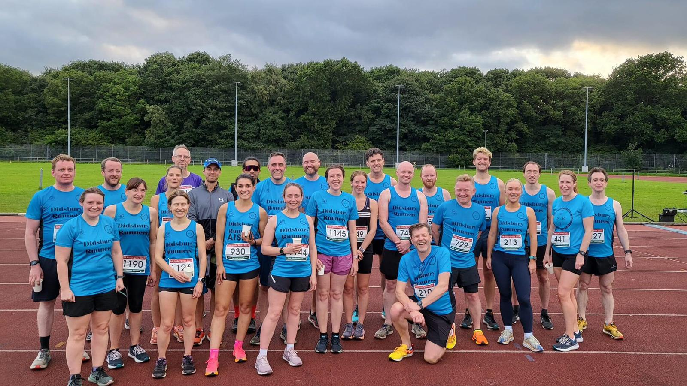

- AREA
- Didsbury
- SPORT
- Run Club
- COST
- free
- TASTER DETAILS
- One free Mon day trial within a month of registering
- BOOKING DETAILS
- Register before first trial
- REGULAR SESSION ATTENDANCE
- To be confirmed
About the club
Volunteer-run club with 5 km/10 km Mon day groups 8–12 min/mile
Week at a glance
1 session
MON
TUE
—WED
—THU
—FRI
—SAT
—SUN
—Mon day 18:45 (arrive 18:30). Wed nesday track: time unconfirmed. First Wed nesday each month: hill reps, time unconfirmed. Membership amount not captured. Free taster/Couchto 5 k does not mean ongoing membership is free. Session times and meeting points are provisional examples or existing details awaiting confirmation. Confirm them with each club before public launch.